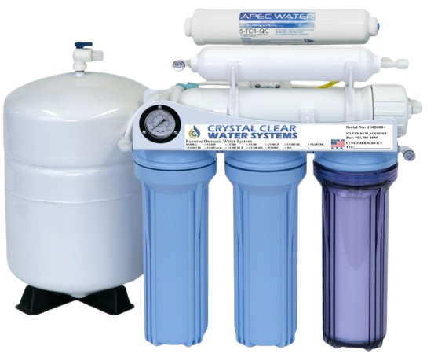
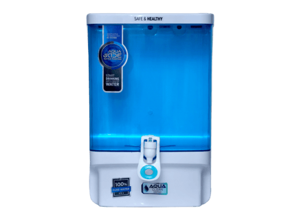
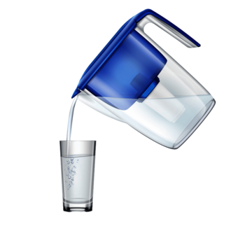

INTRODUCTION
This survey focuses on identifying people using water purifiers in Padugupadu. Water purifiers help to remove contaminants and improve water quality, making it safe for consumption by providing clean drinking water through various filtration and purification techniques. We conducted a survey by visiting households and gathering data on purifier usage. Clean and safe drinking water is essential for maintaining good health and preventing waterborne diseases. However, due to increasing pollution, aging infrastructure, and contamination of water sources, many households have turned to water purifiers as a primary means of ensuring water safety. In recent years, the use of water purifiers has grown, especially in urban and semi-urban areas where concerns over water quality are more prominent. This project aims to study the usage of water purifiers among residents of [insert area name], focusing on their awareness, preferences, and the factors influencing their decisions. By conducting a structured survey, we seek to understand how widespread the use of water purifiers is, what types are commonly used, and how socioeconomic and educational backgrounds affect adoption. The results of this survey can help identify gaps in awareness and access, which can be valuable for public health planning and local water safety campaigns.

